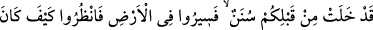
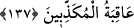
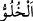

Bol bol yiyip horul horul uyuyarak Allah’ı aramak
Herhalde dam üstünde deve aramak gibidir.
İbrâhîm Edhem, hatiften bu sadâyı işitince
Şeksiz, şüphesiz dünyâdan el etek çekti,
Dünyâdan soyulmuşluk yoluyla makamlara ulaştı
Dünya yükünden kurtulup makbûl ve ikbâl sahibi oldu.
Öyleyse tâlib-i Hakk’a düşen, en yüce mertebeye yükselinceye kadar edebini
muhâfaza etmektir. Acaba Hz. Peygamber (s.a.), bütün günahları bağışlanmış olduğu
halde niçin her gün yetmiş kere istiğfâr ediyordu? O, sırf son derece edebli olduğu için,
ulaştığı makamlara ulaşmış ve O’na tâbi olma, Allah Teâlâ’nın muhabbetinin sebebi
olabilmiştir. Cenâb-ı Hak şöyle buyurur: “De ki: Allah’ı seviyorsanız, bana tâbi olun
ki, Allah da sizi sevsin.” (Âl-i İmrân, 3/31) Peygamberimizdeki Allah korkusu da son
derece ileriydi. Ona uyanların da aynen böyle olması gerekir.
Her ne kadar iyilik yapanın rütbesi yüce ise de, yaptığı kötülüğü farkedip el çekmek,
ısrar etmekten daha iyidir. Kötülükten el çekip ihsân derecesine ulaşanlara ne mutlu! Ne
mutlu rahmân olan Allah’ın katında mahbûbiyyet derecesine nâil olan ecir sahiplerine.
137. Sizden önce nice (milletler hakkında) ilâhî kanunlar gelip geçmiştir. Onun
için, yeryüzünde gezin dolaşın da (Allah’ın âyetlerini) yalan sayanların âkıbeti ne
olmuş, görün!
“Sizden önce de birçok olaylar geçmiştir.” Âyetteki “geçmiştir” diye ifade ettiğimiz
fiilin kökü olan (
) aslında, yalnız kalmak, tek başına olmak demektir. “Hâlî yer”
deyince o yerin boş; orada oturan kimsenin olmadığı anlaşılır. “Hulüvv” kelimesi,
geçmiş zaman için de kullanılır. Çünkü geçen bir şey artık var olmaktan uzaktır. “Hâlî
ümmetler” ve “meydana gelmiş olaylar” da aynı mânadadır. Âyet-i kerîme: “Şu
yaşadığınız zamandan önce, Allah Teâlâ’nın yalanlayıcı ümmetler hakkında koyduğu
birtakım olaylar geçmiştir. Yani hikmeti îcâbı bu ümmetlerin girdiği yollar olarak tâyin
ve vaz’ ettiği kanunlar gelip geçmiştir” demektir. Burada Allah’ın yasalarından maksat,
“yalanlayıcıların sonunun nasıl olduğunu görün” âyet-i celîlesinden de anlaşılacağı
üzere, Allah Teâlâ’nın kendi âyetlerini yalanlayanlara, helâk ve köklerini kurutma gibi
muamelelerde bulunmasıdır.
Bu hususta şüpheli iseniz, “yeryüzünde dolaşın.” Buradaki “dolaşın” emrinden
maksat, normal vâsıtalarla yeryüzünde dolaşmak değildir, şüphesiz. Bilakis,
yalanlayanların halleriyle ilgili mârifet sahibi olmaktır. Eğer bunların hâli,